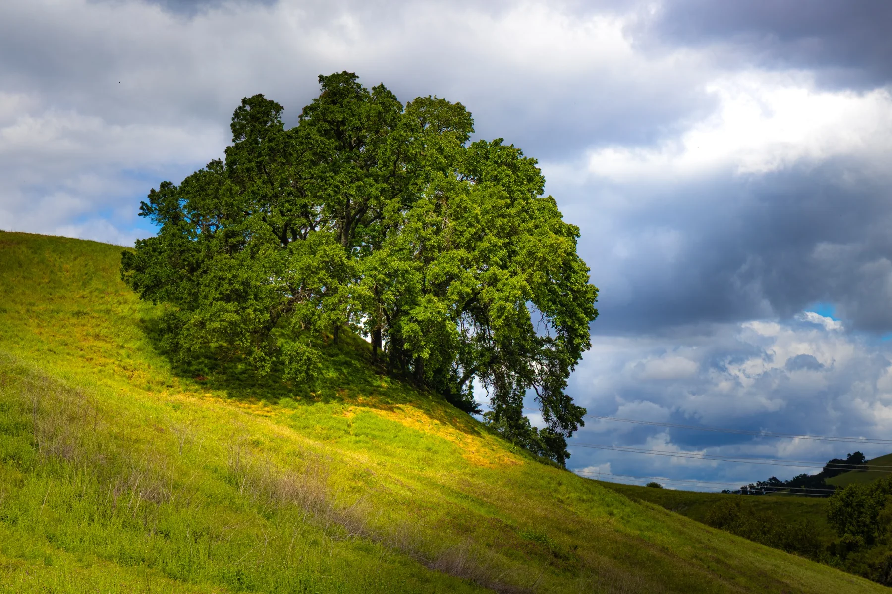
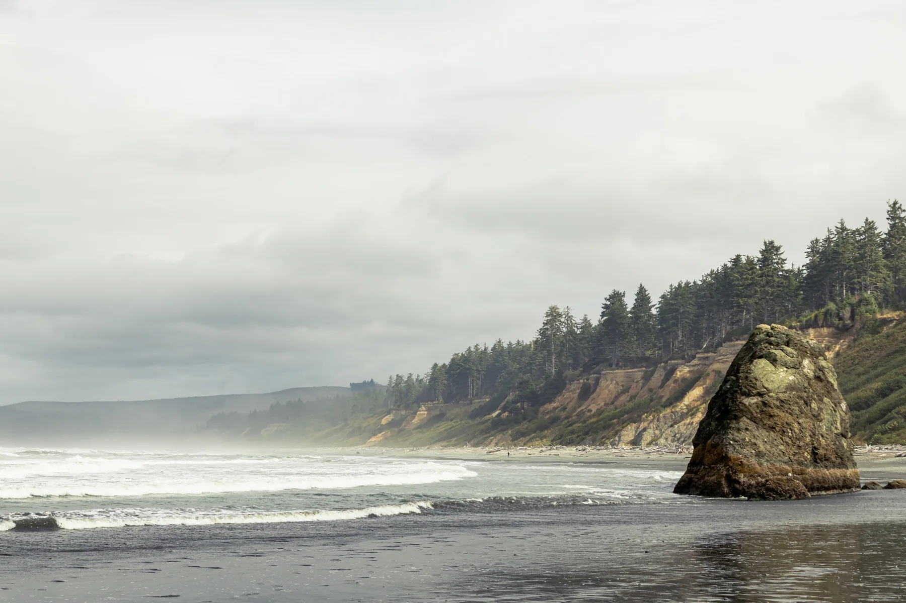

Hello, I’m Lauren
About
I am a Northern California photographer interested in the beauty most people pass every day.

I do not photograph because every moment is extraordinary.
I photograph because ordinary moments become extraordinary when we give them our full attention.
That might mean following evening light across a hillside, crouching beside a flower long enough to notice an insect, watching fog move around Crockett, or choosing a road simply because it looks inviting.
My work moves through landscapes, flowers, wildlife, familiar towns, distant places, and the occasional experiment. The subjects vary. The curiosity does not.
The experience comes first.
The photography comes second.
